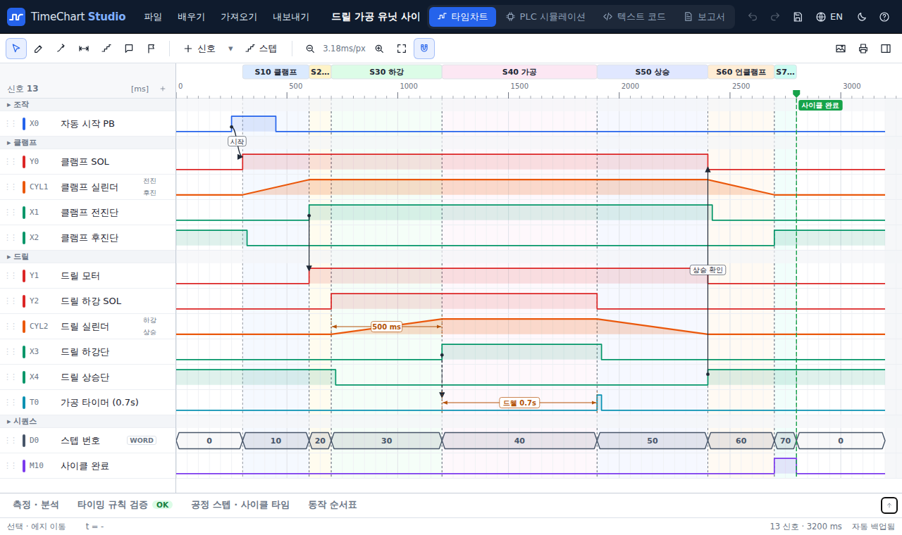
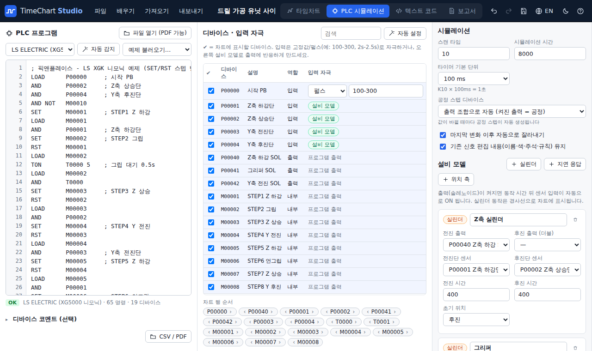
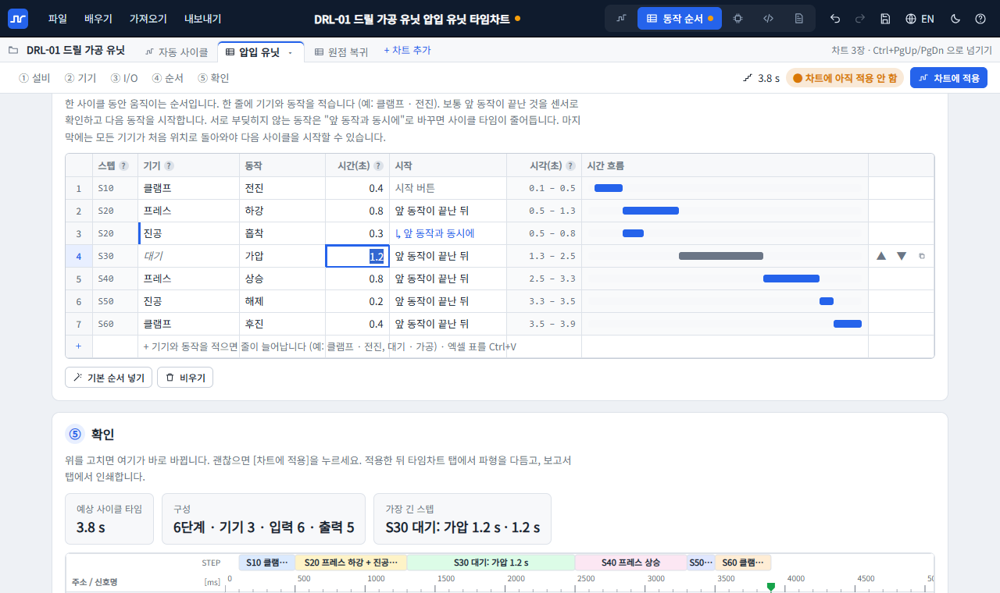
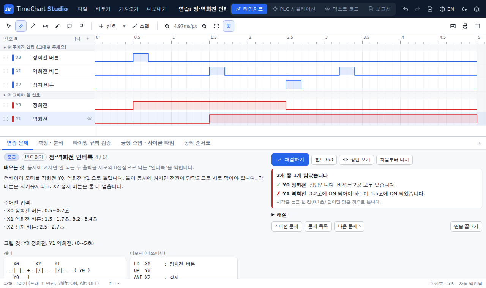

그리기, PLC 로 만들기, 실무 순서대로 만들기, 배우기
설계 검토, 설비 사양서, 고객 보고서에 들어가는 타임차트를 한곳에서 만들고 검토합니다.
마우스로 그리고, 규칙으로 검토
ON/OFF 파형을 끌어서 그리고, 바뀌는 지점을 옮겨 시간을 맞춥니다.
- 실린더 동작 시간은 경사선, 공정 스텝은 색 띠, "이 신호 때문에 저 신호가 켜진다"는 화살표와 시간 치수선
- 응답 시간, 인터록(동시 ON 금지), 펄스 폭, 목표 사이클 타임을 자동으로 OK/NG 판정
- 표제란(작성·검토·승인)이 있는 PDF 보고서, PNG · SVG 이미지, 엑셀 CSV

프로그램을 넣으면 PLC 처럼 계산해서 그립니다
스캔 단위로 프로그램을 실행해 출력과 내부 릴레이, 타이머가 언제 바뀌는지 차트로 만듭니다.
- LS XG5000 은 니모닉(IL)을 인쇄한 PDF 를 그대로 엽니다
- 실제 입출력을 M 릴레이로 옮겨 쓰는 프로그램도 실제 I/O 로 풀어서 보여 줍니다
- 실린더·위치 축(크레인, 컨베이어) 설비 모델로 센서가 저절로 반응해 사이클이 끝까지 돕니다
- 켜진 출력으로 공정 스텝을 자동으로 나누고, 동작 순서표로 몇 초에 무엇이 켜졌는지 보여 줍니다

실무에서 만드는 순서 그대로 적으면 차트가 됩니다
단계마다 무엇을 왜 하는지 설명이 붙어 있어 처음 만드는 사람도 따라갈 수 있습니다.
- 설비와 목표 사이클 타임
- 움직이는 기기와 동작 시간 (실린더, 모터, 흡착)
- I/O 목록과 PLC 주소 (미쓰비시 · LS · 지멘스)
- 동작 순서 (앞 동작 뒤에 / 동시에)
- 타임차트와 사이클 타임 · 인터록 검토

튜토리얼과 채점되는 연습 문제 15개
튜토리얼은 누를 버튼을 하나씩 짚어 주고, 연습 문제는 직접 그린 차트를 신호별로 채점합니다.
- PLC 읽기 9문제: 자기유지, 타이머, 펄스, 인터록, 카운터, 플리커, 순차 기동, OFF 딜레이, 시간 초과 알람
- 설비 동작 6문제: 실린더 왕복부터 픽앤플레이스, 드릴 가공까지
- 틀리면 "3.2초에 ON 되어야 하는데 1.5초에 ON" 처럼 어디가 다른지 알려 주고, 힌트와 단계별 해설이 있습니다

가로는 시간, 세로는 신호 한 줄씩
타임차트는 설비가 한 사이클 동안 언제 무엇이 켜지고 꺼지는지, 무엇이 얼마나 걸려 움직이는지 한 장에 그린 그림입니다.
- 출력 (솔레노이드 SOL, 모터)
- PLC 가 켜는 신호입니다. 켜면 실린더나 모터가 움직입니다.
- 입력 (버튼, 센서)
- PLC 가 읽는 신호입니다. 실린더가 끝에 도착했는지 센서로 확인합니다.
- 경사선
- 실린더가 한쪽 끝에서 반대쪽 끝까지 움직이는 동안입니다. 이 시간들이 쌓여 사이클 타임이 됩니다.
- 공정 스텝
- 위의 색 띠. 클램프 → 가공 → 해제처럼 동작을 단계로 나눈 것입니다.
실무에서는 이런 순서로 만듭니다
- 설비 사양무엇을 하는 설비이고 한 사이클을 몇 초 안에 끝내야 하는지
- 동작 기기움직이는 것(실린더, 모터)과 각 동작 시간
- I/O 목록기기마다 출력(SOL)과 센서, PLC 주소
- 동작 순서무엇이 먼저, 무엇이 동시에 움직이는지
- 차트 · 검토사이클 타임과 인터록을 확인하고 작성·검토·승인
니모닉을 PDF 로 인쇄해서 그대로 여세요
XG5000 은 니모닉(IL)을 텍스트로 내보내는 기능이 없고 인쇄만 됩니다. TimeChart Studio 는 그 PDF 를 그대로 읽습니다.
니모닉(IL) 보기에서 인쇄
XG5000 에서 프로그램을 열고 니모닉 보기 상태로 인쇄합니다.
"Microsoft Print to PDF"로 저장
프린터를 PDF 로 골라 저장합니다. 변수·설명문 목록도 같은 방법으로 저장하면 신호 이름이 붙습니다.
PLC 탭에서 파일 열기
PLC 시뮬레이션 탭 → 파일 열기로 PDF 를 고르고, 시작 버튼 같은 입력을 넣어 시뮬레이션합니다.
페이지 머리말, 렁 설명문, 비실행문은 자동으로 걸러냅니다. 글자를 고를 수 없는 스캔(이미지) PDF 는 읽지 못합니다. PLC 탭 열기
읽을 수 있는 PLC 와 내보낼 수 있는 형식
| LS ELECTRIC XG5000 | XGK / XGB 니모닉(IL): 인쇄한 PDF, 복사한 텍스트. 변수·설명문 목록 |
|---|---|
| 미쓰비시 GX Works2 / 3 | 니모닉, CSV 내보내기, 코멘트 CSV. STL 스텝 래더 |
| 지멘스 STEP 7 / TIA Portal | STL(AWL) 소스. 영문·독일어 니모닉 |
| IEC 61131-3 ST / SCL | CODESYS, TwinCAT, XG5000 ST, GX Works3 ST. CASE 스텝 번호로 공정 스텝 |
| 가져오기 | 데이터 로거 · 트렌드 CSV(실측 차트), WaveDrom JSON, 텍스트 코드(TCT) |
| 내보내기 | 표제란 있는 PDF 보고서(A4 · A3), PNG, SVG, 이미지 복사, 엑셀 CSV(변화 시점표 · 신호 목록 · 스텝표), WaveDrom JSON |
회사 프로그램은 내 PC 밖으로 나가지 않습니다
브라우저 안에서만 계산
여는 PLC 프로그램과 차트는 서버로 보내지 않습니다. 읽고 계산하는 일은 모두 여러분의 브라우저 안에서 합니다.
인터넷이 막힌 PC 에서도
공장 PC, 사내망용 오프라인 파일(약 2.5MB)을 받아 더블클릭하면 설치 없이 열립니다. 오프라인 버전 받기
작업은 자동 백업
고친 내용은 브라우저에 자동으로 보관되고, 파일(.tchart)로 저장해 다른 PC 로 옮길 수 있습니다.